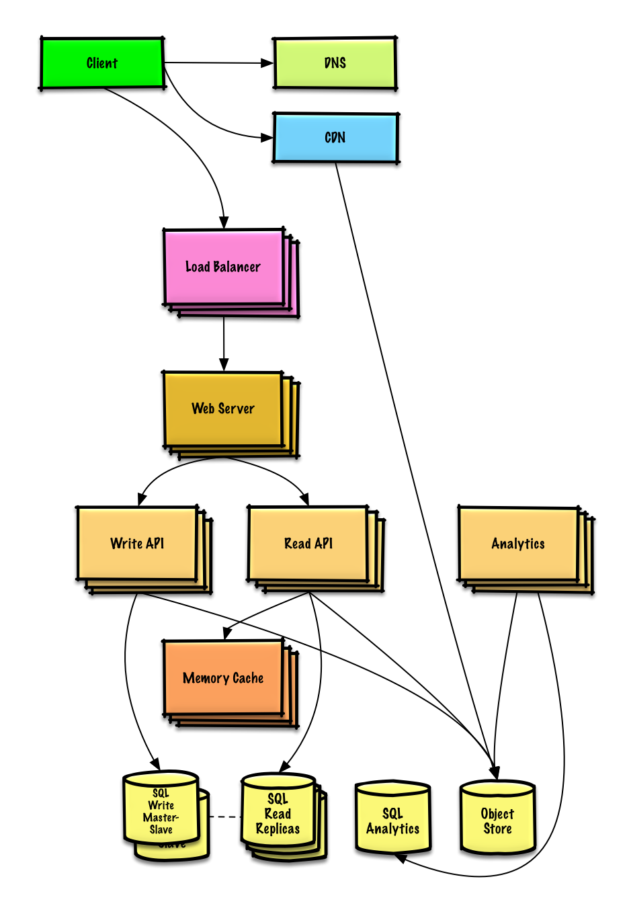
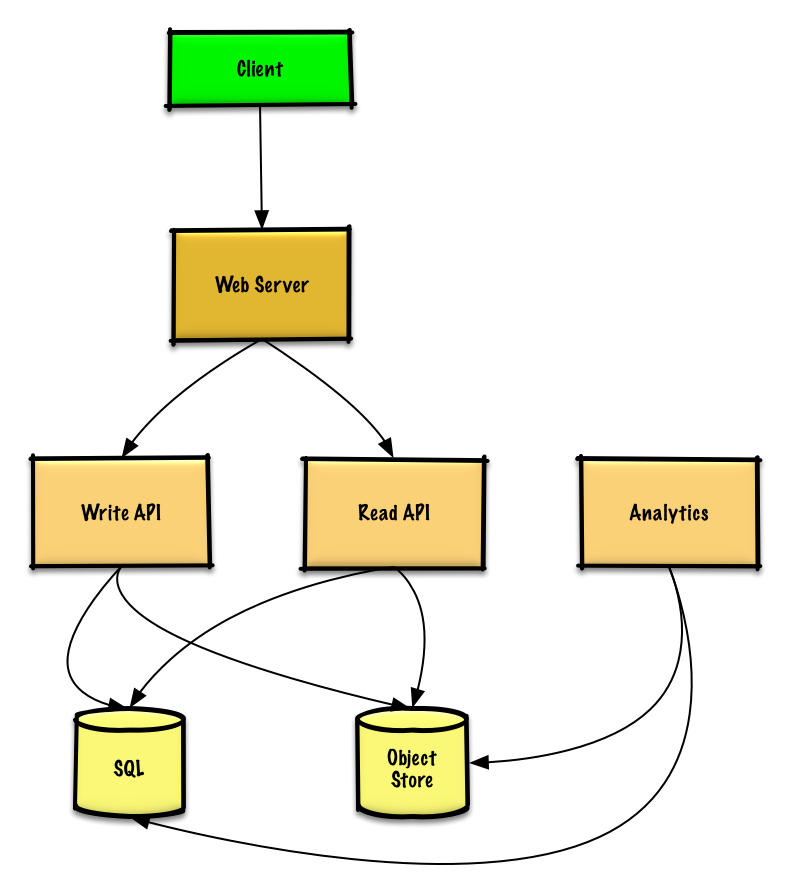

MODULE 14 · SYSTEM DESIGN SOLUTION
Solution to the exercise: "Design Pastebin.com (or Bit.ly)"
A service that stores a block of text and hands back a short link to retrieve it later — the same shape of problem as a URL shortener, except the thing being stored is the content itself, not a redirect target. Work through this after you've tried the exercise in Module 13 yourself.
We're scoping this to what's answerable in an interview — no accounts, no login, no editing.
Accounts, email verification, login, editing an existing paste, custom visibility, custom shortlinks.

The write path could use a relational database as a giant hash table mapping the generated url to where the paste content lives, or a managed object store (S3) for the actual bytes, or a NoSQL key-value store instead of SQL entirely — all three are defensible; the discussion below picks the relational-database approach and says so explicitly, which is exactly what you should do out loud in an interview.
pastes table, saves the content to the Object Store, and returns the urlA reasonable pastes table:
shortlink char(7) NOT NULL expiration_length_in_minutes int NOT NULL created_at datetime NOT NULL paste_path varchar(255) NOT NULL PRIMARY KEY(shortlink)
The primary key on shortlink gives you a free uniqueness-enforcing index. A second index on created_at keeps lookups fast and keeps recent data in memory — reading 1 MB sequentially from memory takes ~250 microseconds, 4x longer from SSD, and 80x longer from disk, so keeping the hot path in memory matters.
Generating the url: take the MD5 hash of the user's IP address plus a timestamp (or of random data), then Base62-encode it ([a-zA-Z0-9] — url-safe, no escaping needed, unlike Base64's +//). Keep the first 7 characters: 62⁷ possible values is comfortably more than the 360 million shortlinks the 3-year estimate calls for.
def base_encode(num, base=62):
digits = []
while num > 0
remainder = modulo(num, base)
digits.push(remainder)
num = divide(num, base)
digits = digits.reverse
url = base_encode(md5(ip_address+timestamp))[:URL_LENGTH]A public REST API for creating a paste:
$ curl -X POST --data '{ "expiration_length_in_minutes": "60",
"paste_contents": "Hello World!" }' https://pastebin.com/api/v1/paste
→ { "shortlink": "foobar" }
Client → Web Server → Read API, which checks the SQL database for the shortlink; if found, fetches the content from the Object Store, otherwise returns an error.
$ curl https://pastebin.com/api/v1/paste?shortlink=foobar
→ { "paste_contents": "Hello World", "created_at": "YYYY-MM-DD HH:MM:SS",
"expiration_length_in_minutes": "60" }
Since realtime isn't a requirement, just MapReduce the web server logs into monthly hit counts.
# -*- coding: utf-8 -*-
from mrjob.job import MRJob
class HitCounts(MRJob):
def extract_url(self, line):
"""Extract the generated url from the log line."""
pass
def extract_year_month(self, line):
"""Return the year and month portions of the timestamp."""
pass
def mapper(self, _, line):
"""Parse each log line, extract and transform relevant lines.
Emit key value pairs of the form:
(2016-01, url0), 1
(2016-01, url0), 1
(2016-01, url1), 1
"""
url = self.extract_url(line)
period = self.extract_year_month(line)
yield (period, url), 1
def reducer(self, key, values):
"""Sum values for each key.
(2016-01, url0), 2
(2016-01, url1), 1
"""
yield key, sum(values)
def steps(self):
"""Run the map and reduce steps."""
return [
self.mr(mapper=self.mapper,
reducer=self.reducer)
]
if __name__ == '__main__':
HitCounts.run()Scan the SQL database for rows whose expiration timestamp has passed, then delete (or mark) them. Simple and good enough since this isn't a realtime requirement.

Talking points for this upgrade, each covered in its own module — don't re-derive them here, just reference them: DNS and CDN (Module 04), Load Balancer and Horizontal scaling (Module 05), Cache (Module 08), RDBMS replication (Module 07), Consistency and Availability patterns (Module 03).
The Analytics Database becomes a proper data warehouse (Redshift/BigQuery-style). The Object Store (S3-class) comfortably absorbs 12.7 GB/month of new paste content. The ~40 reads/second (more at peak) get served from a Memory Cache in front of SQL Read Replicas, which also smooths out the uneven traffic. 4 average writes/second is fine for a single SQL Write Master with replicas — if it weren't, the next moves are Federation, Sharding, Denormalization, and SQL tuning (all in Module 07), plus considering a NoSQL database for part of the data.
Next in Module 14: Twitter timeline & search.